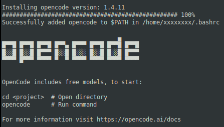
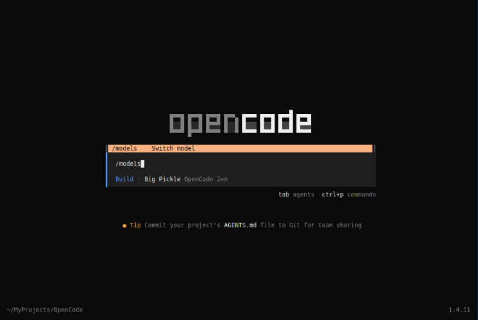
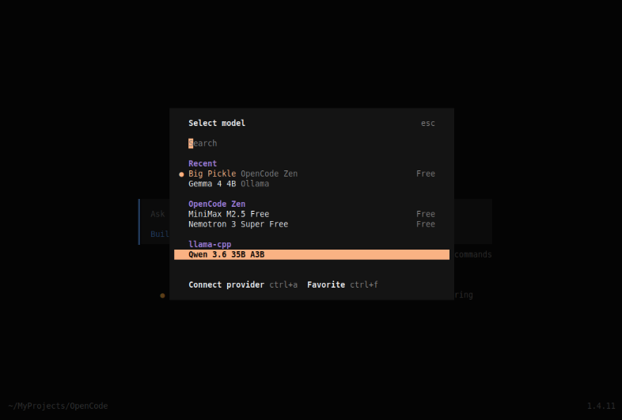
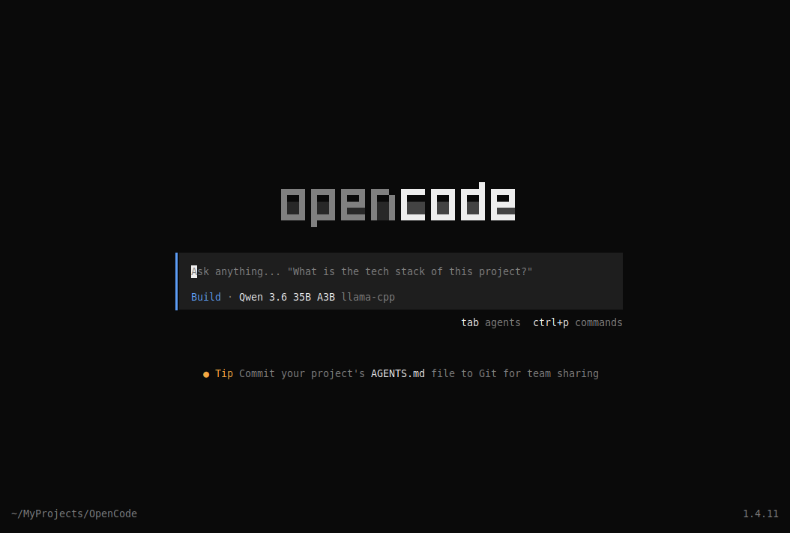
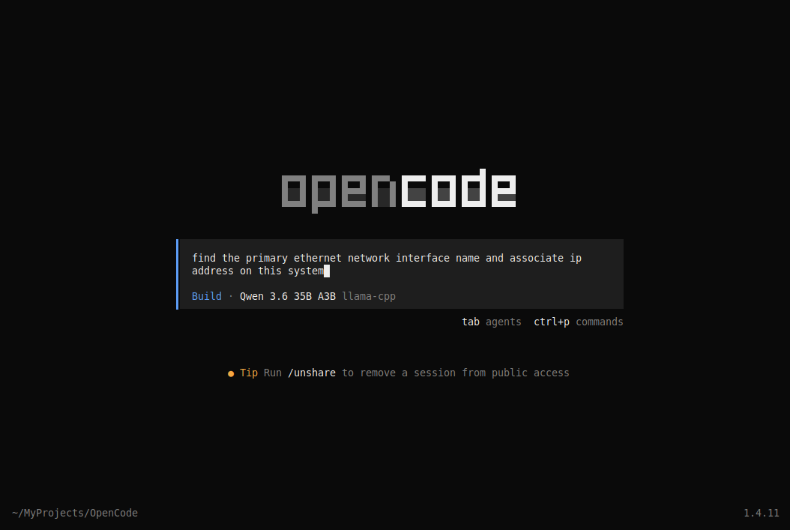
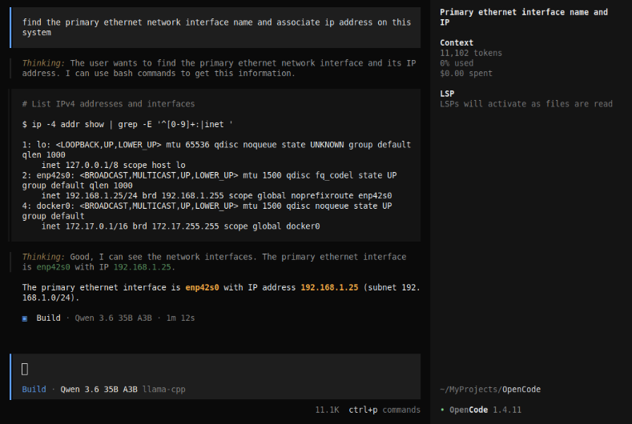
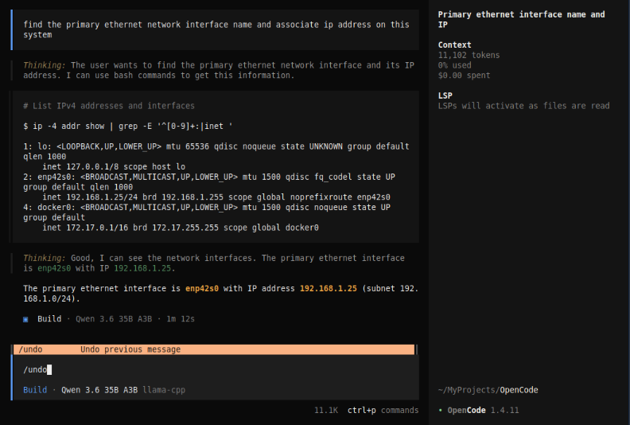
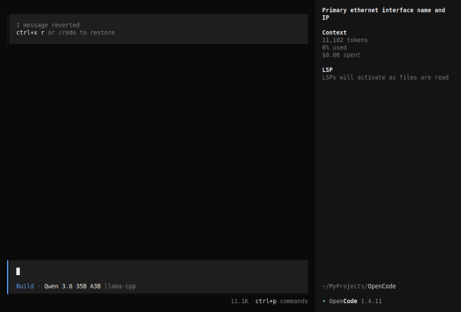
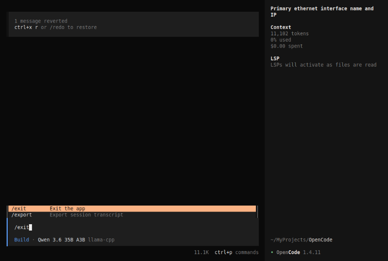

| PolarSPARC |
OpenCode Decoded: The Essential Primer - Part 1
| Bhaskar S | 04/25/2026 |
Overview
OpenCode is an open source AI coding assistant that is an alternative to the wildly popular commercial offering - Claude Code !!!
In short, OpenCode is a natural language, conversational, provider agnostic, agentic coding tool that integrates with the users terminal (command line interface) to assist developers with their tasks.
OpenCode can navigate and understand a codebase for any project, plan the architecture, and apply changes to the codebase.
While OpenCode excels at coding tasks, it can also help with anything one can do from the command line, such as, writing docs, running commands, searching files, researching topics, and much more !!!
While Claude Code is locked to the LLM models from Anthropic, OpenCode is truly provider agnostic, allowing one to try LLM models from a plethora of providers including using locally running LLM model(s).
Installation and Setup
The installation and setup will can on a Ubuntu 24.04 LTS based Linux desktop.
To install OpenCode, execute the following command in a terminal window:
$ curl -fsSL https://opencode.ai/install | bash
At the time of this article, the following was the typical output:

Note that the OpenCode binary is installed in the directory $HOME/.opencode/bin.
We will be using the llama.cpp platform for local model serving. Ensure that Docker is installed and setup on the desktop (see INSTRUCTIONS).
We will create the required models directory by executing the following command in a terminal window:
$ mkdir -p $HOME/.llama_cpp/models
From the llama.cpp docker RESPOSITORY, one can identify the current version of the docker image. At the time of this article, the latest version of the docker image ended with the version b8925.
We require the docker image with the tag word full. If the desktop has an Nvidia GPU, one can look for the docker image with the tag words full-cuda.
To pull and download the full docker image for llama.cpp with CUDA support, execute the following command in a terminal window:
$ docker pull ghcr.io/ggml-org/llama.cpp:full-cuda-b8925
The following should be the typical output:
full-cuda-b8925: Pulling from ggml-org/llama.cpp 5a7813e071bf: Pull complete a102f36d092c: Pull complete 05ec76e31584: Pull complete 398182656c47: Pull complete 73389fbd088f: Pull complete cbb9175a9bc5: Pull complete 3d6ab8c799cd: Pull complete 7209097bfb98: Pull complete 545a3ada5b6b: Pull complete 78b86fd7e3b2: Pull complete 9cf4bad41205: Pull complete a6678c064c57: Pull complete 4f4fb700ef54: Pull complete 6c56250a02bb: Pull complete Digest: sha256:6854d27e47626172f239a518e5df52b3a16ac1c383dc2959d23b760f82ed09a9 Status: Downloaded newer image for ghcr.io/ggml-org/llama.cpp:full-cuda-b8925 ghcr.io/ggml-org/llama.cpp:full-cuda-b8925
For the OpenCode demostration, we will download and use the just released Qwen 3.6 LLM model from Huggingface - the bartowski/Qwen_Qwen3.6-35B-A3B-GGUF model.
Download Qwen 3.6 35B A3B (4-bit) model to the directory $HOME/.llama_cpp/models.
To start the llama.cpp server for serving the Qwen 3.6 35B A3B (4-bit) model, execute the following command in the terminal window:.
$ docker run --rm --name llama_cpp --gpus all --network host -v $HOME/.llama_cpp/models:/models ghcr.io/ggml-org/llama.cpp:full-cuda-b8925 --server --model /models/Qwen_Qwen3.6-35B-A3B-Q4_K_M.gguf --alias qwen3.6-a3b --host 192.168.1.25 --port 8000 --device CUDA0 --temp 1.0 --top_k 64 --top_p 0.95 --no-mmap --threads 4 --ctx-size 65536 --flash-attn on -ctk q4_0 -ctv q4_0
The following should be the typical trimmed output:
ggml_cuda_init: found 1 CUDA devices (Total VRAM: 15944 MiB): Device 0: NVIDIA GeForce RTX 4060 Ti, compute capability 8.9, VMM: yes, VRAM: 15944 MiB load_backend: loaded CUDA backend from /app/libggml-cuda.so load_backend: loaded CPU backend from /app/libggml-cpu-haswell.so main: n_parallel is set to auto, using n_parallel = 4 and kv_unified = true build_info: b8925-0adede866 system_info: n_threads = 4 (n_threads_batch = 4) / 16 | CUDA : ARCHS = 500,610,700,750,800,860,890,1200 | USE_GRAPHS = 1 | PEER_MAX_BATCH_SIZE = 128 | CPU : SSE3 = 1 | SSSE3 = 1 | AVX = 1 | AVX2 = 1 | F16C = 1 | FMA = 1 | BMI2 = 1 | LLAMAFILE = 1 | OPENMP = 1 | REPACK = 1 | Running without SSL init: using 15 threads for HTTP server start: binding port with default address family main: loading model srv load_model: loading model '/models/Qwen_Qwen3.6-35B-A3B-Q4_K_M.gguf' ...[TRIM]... common_fit_params: successfully fit params to free device memory common_fit_params: fitting params to free memory took 3.12 seconds llama_model_load_from_file_impl: using device CUDA0 (NVIDIA GeForce RTX 4060 Ti) (0000:04:00.0) - 15336 MiB free llama_model_loader: loaded meta data with 48 key-value pairs and 733 tensors from /models/Qwen_Qwen3.6-35B-A3B-Q4_K_M.gguf (version GGUF V3 (latest)) ...[TRIM]... llama_context: n_seq_max = 4 llama_context: n_ctx = 65536 llama_context: n_ctx_seq = 65536 llama_context: n_batch = 2048 llama_context: n_ubatch = 512 llama_context: causal_attn = 1 llama_context: flash_attn = enabled llama_context: kv_unified = true llama_context: freq_base = 10000000.0 llama_context: freq_scale = 1 llama_context: n_ctx_seq (65536) < n_ctx_train (262144) -- the full capacity of the model will not be utilized llama_context: CUDA_Host output buffer size = 3.79 MiB llama_kv_cache: CUDA0 KV buffer size = 360.00 MiB llama_kv_cache: size = 360.00 MiB ( 65536 cells, 10 layers, 4/1 seqs), K (q4_0): 180.00 MiB, V (q4_0): 180.00 MiB llama_kv_cache: attn_rot_k = 1, n_embd_head_k_all = 256 llama_kv_cache: attn_rot_v = 1, n_embd_head_k_all = 256 llama_memory_recurrent: CUDA0 RS buffer size = 251.25 MiB llama_memory_recurrent: size = 251.25 MiB ( 4 cells, 40 layers, 4 seqs), R (f32): 11.25 MiB, S (f32): 240.00 MiB ...[TRIM]... main: model loaded main: server is listening on http://192.168.1.25:8000 main: starting the main loop... srv update_slots: all slots are idle
We need to create a config directory for OpenCode by executing the following command in the terminal window:
$ mkdir -p $HOME/.config/opencode
Next, we will create a JSON config file called opencode.json with the following content:
{
"$schema": "https://opencode.ai/config.json",
"provider": {
"ollama": {
"npm": "@ai-sdk/openai-compatible",
"name": "Ollama",
"options": {
"baseURL": "http://192.168.1.25:11434/v1"
},
"models": {
"gemma4:e4b": {
"name": "Gemma 4 4B"
}
}
},
"llama-cpp": {
"npm": "@ai-sdk/openai-compatible",
"name": "llama-cpp",
"options": {
"baseURL": "http://192.168.1.25:8000/v1"
},
"models": {
"qwen3.6-a3b": {
"name": "Qwen 3.6 35B A3B"
}
}
}
}
}
Note that we have defined configuration for two local model providers - one for Ollama and the other for llama-cpp !!!
Hands-on with OpenCode
Create a trusted directory for OpenCode projects by executing the following commands in the terminal window:
$ mkdir -p $HOME/MyProjects/OpenCode
$ cd $HOME/MyProjects/OpenCode
To list all the available provider models in OpenCode, execute the following command in the terminal window:
$ opencode models
The following should be the typical output:
opencode/big-pickle opencode/gpt-5-nano opencode/minimax-m2.5-free opencode/nemotron-3-super-free llama-cpp/qwen3.6-a3b ollama/gemma4:e4b
Launch OpenCode by executing the following command in the terminal window:
$ opencode
The user would be presented with the following conversational screen:
Notice that the default provider is OpenCode in the cloud with the LLM model Big Pickle.
OpenCode includes a set of pre-defined tasks in the form of / (slash) commands. The following table summarizes some of the slash commands:
| Slash Command | Description |
|---|---|
| /help | Display help information |
| /init | Initialize opencode within a project |
| /models | Allows one to choose a model |
| /new | Create a new session |
| /sessions | Switch between sessions (including past sessions) |
| /status | View the status |
| /themes | Select a theme |
| /exit | Exit claude |
We will go ahead and type the command /models as shown below:

Press Enter and and navigate to the desired model as shown below:

Press Enter and we will be back to the main conversation screen as shown below:

To test the setup, type a request prompt as shown below:

Press Enter after typing the user prompt and OpenCode will respond as shown below:

AWESOME - we have successfully tested OpenCode using a local model !
To undo the just performed operation, type the command /undo as shown below:

Press Enter and we are taken to the conversation screen with the appropriate message at the top left as shown below:

To exit the OpenCode cli, type the command /exit command as shown below:

Press Enter and OpenCode cli terminates and we are back to the system terminal.
With this, we conclude the Part 1 of the OpenCode primer series !!!
References